Collections: Using dataset collection
 Anton Nekrutenko
Anton Nekrutenko
Overview
question Questionsobjectives Objectives
- How to manipulate large numbers of datasets at once?
- Understand and master dataset collections
time Time estimation: 30 minutes
level Level: Intermediate level level level
Supporting Materials
Here we will show Galaxy features designed to help with the analysis of large numbers of samples. When you have just a few samples - clicking through them is easy. But once you’ve got hundreds - it becomes very annoying. In Galaxy we have introduced Dataset collections that allow you to combine numerous datasets in a single entity that can be easily manipulated.
Getting data
Here is a library containing a few datasets we will be practicing with (as with any Galaxy tutorial, you can upload your own data and play with it instead of the provided datasets):
M117-bl_1- family 117, mother, 1-st (F) read from bloodM117-bl_2- family 117, mother, 2-nd (R) read from bloodM117-ch_1- family 117, mother, 1-st (F) read from cheekM117-ch_1- family 117, mother, 2-nd (R) read from cheekM117C1-bl_1- family 117, child, 1-st (F) read from bloodM117C1-bl_2- family 117, child, 2-nd (R) read from bloodM117C1-ch_1- family 117, child, 1-st (F) read from cheekM117C1-ch_2- family 117, child, 2-nd (R) read from cheek
These datasets represent genomic DNA (enriched for mitochondria via a long range PCR) isolated from blood (bl) and cheek (buccal swab, ch) of mother (M117) and her child (M117C1) that was sequenced on an Illumina miSeq machine as paired-read library (250-bp reads; see our 2014 manuscript for Methods).
Load data from Galaxy library
Right click (or Ctrl-click) on this link to open a new browser window and position this window side-by-side with the window displaying this tutorial. You will see this:
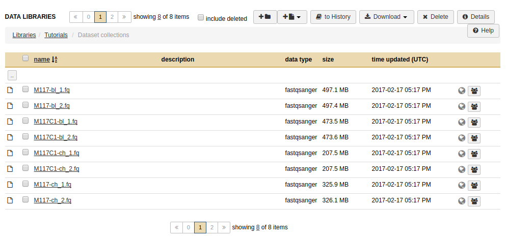
Select all datasets, click to History button, and select as Datasets. In the pop-up window, either select a history or create a new one. This will import all datasets into a history. The screen will look like this:
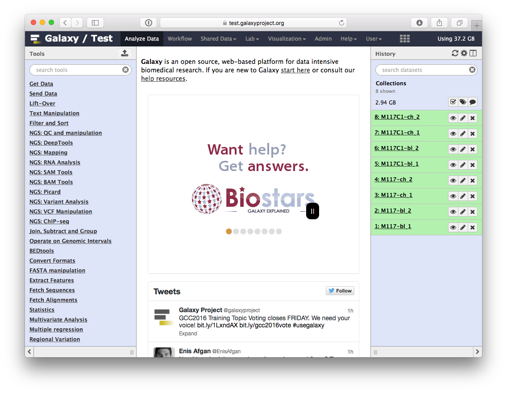
Creating a paired dataset collection
Now click the checkbox in and you will see your history changing like this:
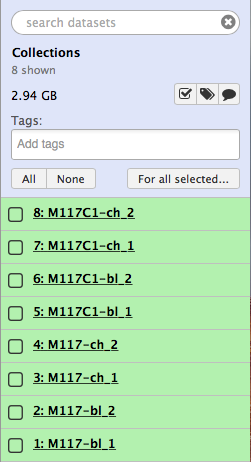
Let’s click All, which will select all datasets in the history, then click For all selected… and finally select Build List of Dataset Pairs from the following menu:
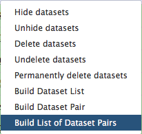
The following wizard will appear:
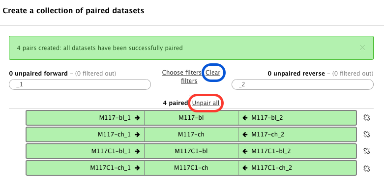
In this case Galaxy automatically assigned pairs using the _1 and _2 endings of dataset names. Let’s however pretend that this did not happen. Click on Unpair all (highlighted in red in the figure above) link and then on Clear link (highlighted in blue in the figure above). The interface will change into its unpaired state:
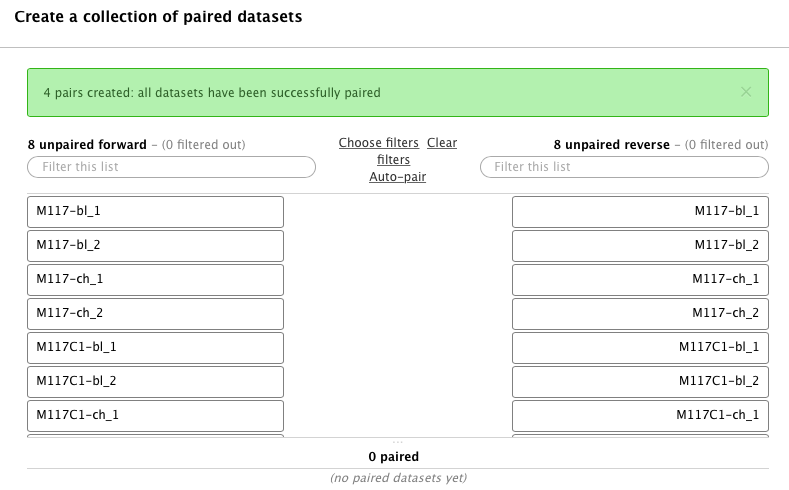
These datasets contain paired-end reads. Datasets containing the first (forward) and the second (reverse) read are differentiated by having _1 and _2 in the filename. We can use this feature in dataset collection wizard to pair our datasets. Type _1 in the left Filter this list text box and _2 in the right:
You will see that the dataset collection wizard will automatically filter lists on each side of the interface:
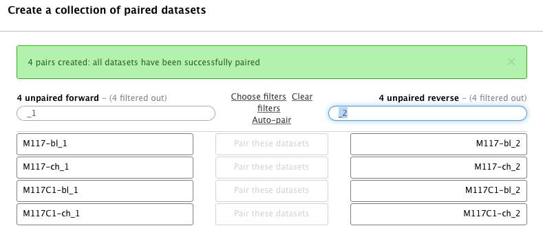
Now you can either click Auto pair if pairs look good to you (proper combinations of datasets are listed in each line) or pair each forward/reverse group individually by pressing Pair these datasets button separating each pair:
Now it is time to name the collection:
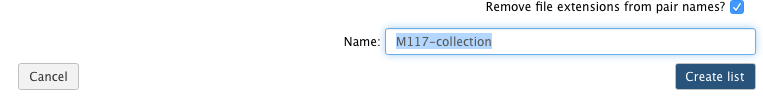
and create the collection by clicking Create list. A new item will appear in the history as you can see on the panel A below. Clicking on collection will expand it to show four pairs it contains (panel B). Clicking individual pairs will expand them further to reveal forward and reverse datasets (panel C). Expanding these further will enable one to see individual datasets (panel D).
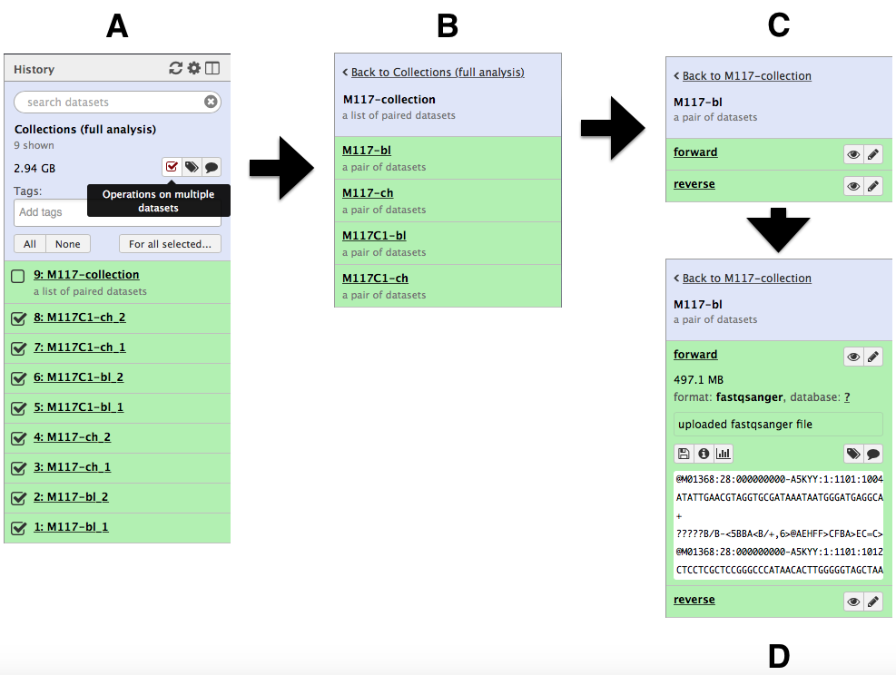
Using collections
By now we see that a collection can be used to bundle a large number of items into a single history item. This means that many Galaxy tools will be able to process all datasets in a collection transparently to you. Let’s try to map these datasets to human genome using bwa-mem mapper. In the Tools pane on the left, use the search-tools to find bwa-mem. Click on Map with BWA-MEM in the search list.
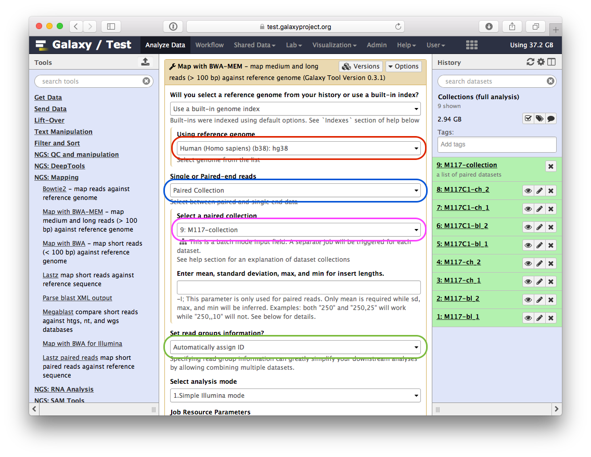
In the central panel, provide the following parameters for Map with BWA-MEM:
- set Using reference genome to
hg38(red outline); - set Single or Paired-end reads to
Paired collection(blue outline); - select
M177-collectionfrom Select a paired collection dropdown (magenta outline); - In Set read groups information select
Automatically assign ID(green outline); - scroll down and click Execute.
You will see jobs being submitted and new datasets appearing in the history. IN particular below you can see that Galaxy has started four jobs (two yellow and two gray). This is because we have eight paired datasets with each pair being processed separately by bwa-mem. As a result we have four bwa-mem runs:
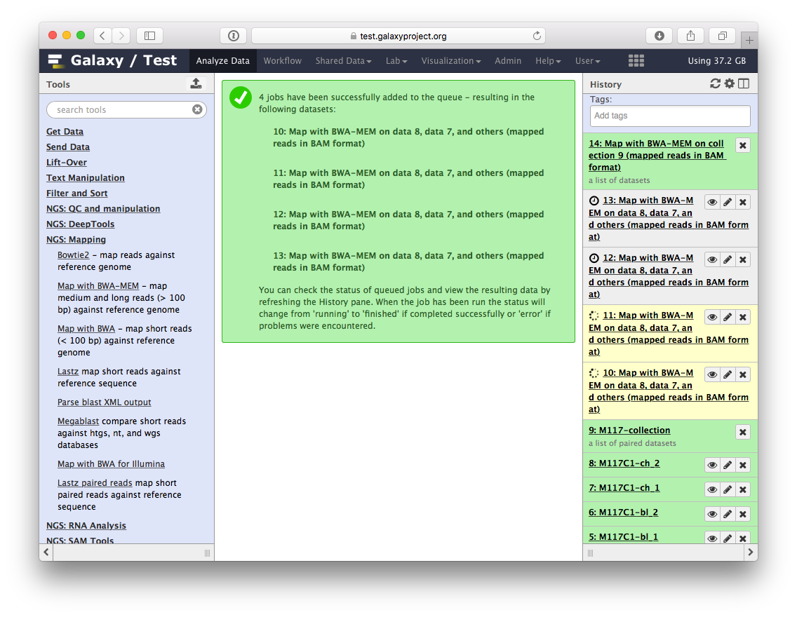
Once these jobs are finished they will disappear from the history and all results will be represented as a new collection:
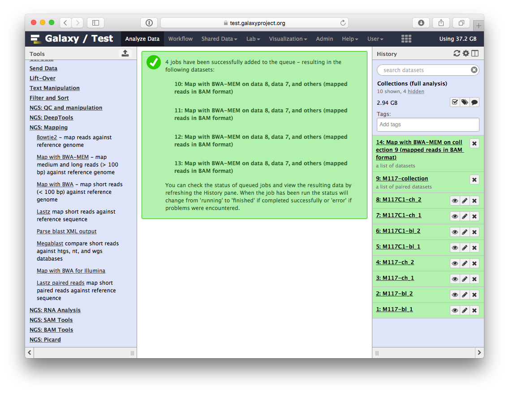
Let’s look at this collection by clicking on it (panel A in the figure below). You can see that now this collection is no longer paired (compared to the collection we created in the beginning of this tutorial). This is because bwa-mem takes forward and reverse data as input, but produces only a single BAM dataset as the output. So what we have in the result is a list of four dataset (BAM files; panels B and C).
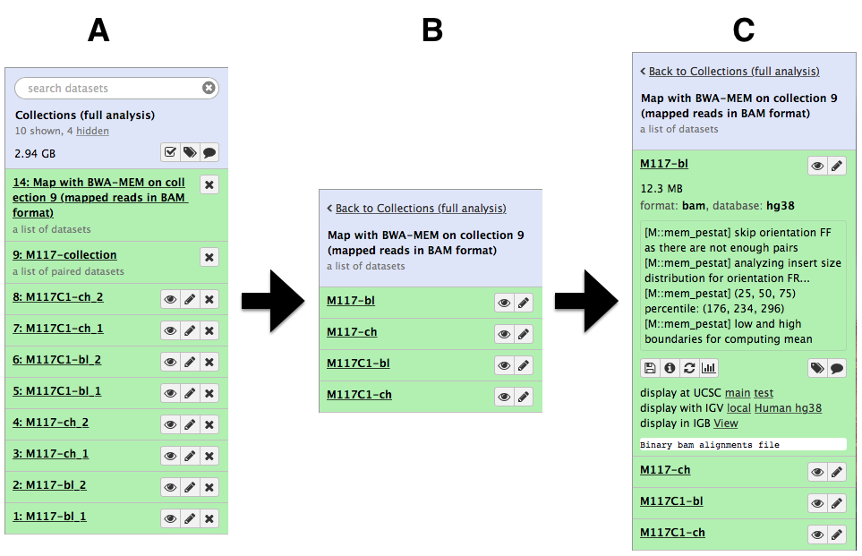
Processing collection as a single entity
Now that bwa-mem has finished and generated a collection of BAM datasets we can continue to analyze the entire collection as a single Galaxy ‘item’.
Ensuring consistency of BAM dataset
Let’s perform cleanup of our BAM files with cleanSam utility from the Picard package:
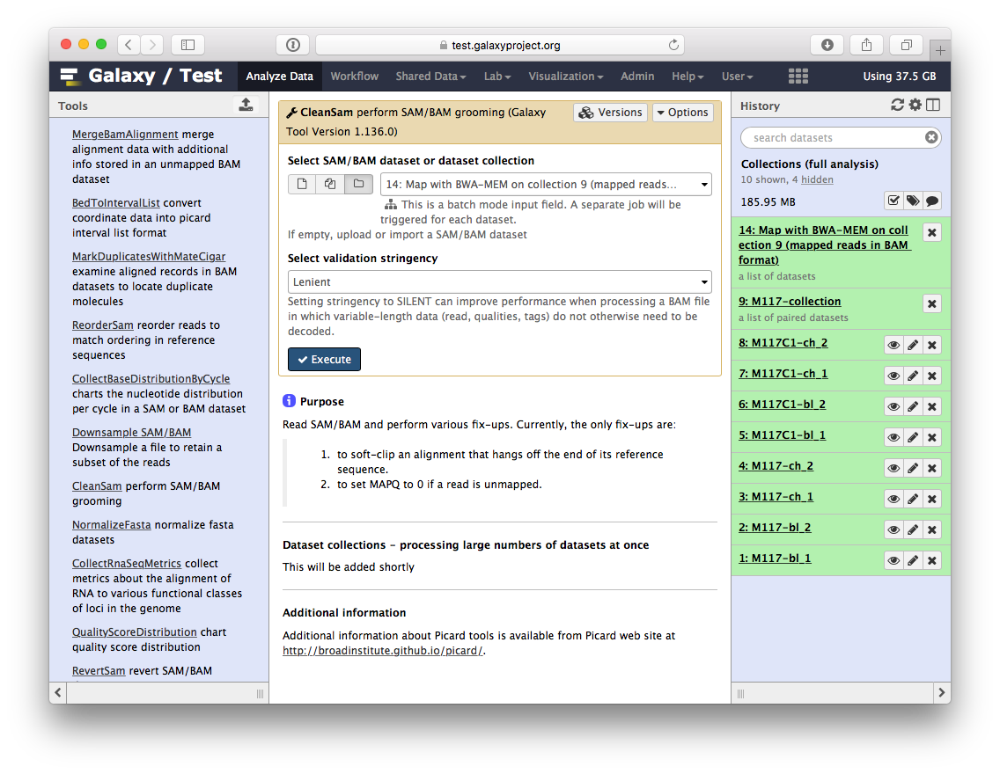
If you look at the picture above carefully, you will see that the Select SAM/BAM dataset or dataset collection parameter is empty (it says No sam or bam datasets available.). This is because we do not have single SAM or BAM datasets in the history. Instead we have a collection. So all you need to do is to click on the button and you will get our BAM collection selected:
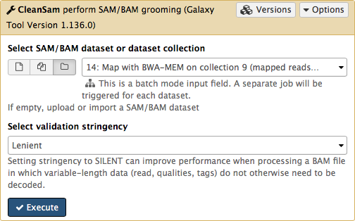
Click Execute. As an output this tool will produce a collection contained cleaned data.
Retaining ‘proper pairs’
Now let’s clean the dataset further by only preserving truly paired reads (reads satisfying two requirements: (1) read is paired, and (2) it is mapped as a proper pair). For this we will use Filter SAM or BAM tools from SAMTools collection:
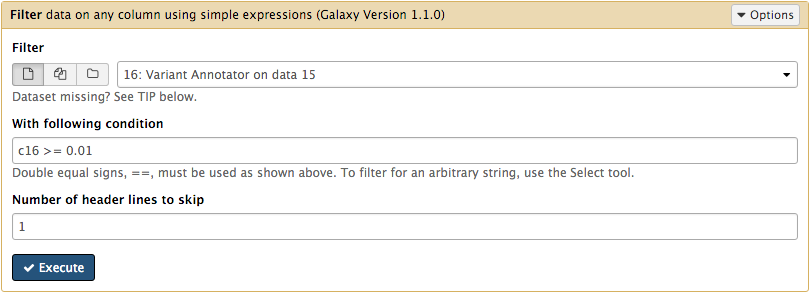
parameters should be set as shown below. By setting mapping quality to 20 we avoid reads mapping to multiple locations and by using Filter on bitwise flag option we ensure that the resulting dataset will contain only properly paired reads. This operation will produce yet another collection containing now filtered datasets.
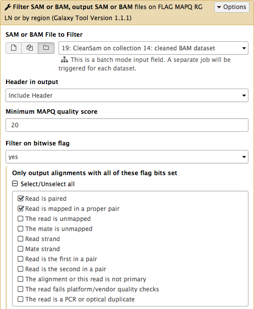
Merging collection into a single dataset
The beauty of BAM datasets is that they can be combined in a single entity using so called Read group. This allows to bundle reads from multiple experiments into a single dataset where read identity is maintained by labelling every sequence with read group tags. So let’s finally reduce this collection to a single BAM dataset. For this we will use MergeSamFiles tool for the Picard suite:
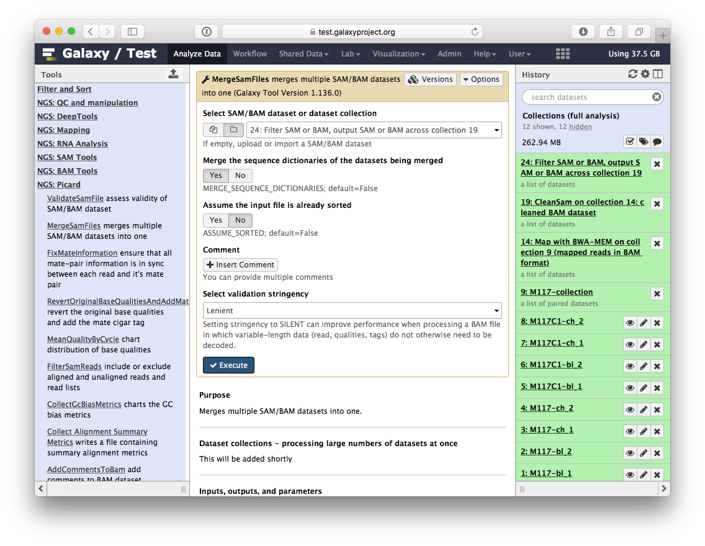
Here we select the collection generated by the filtering tool described above:

This operation will not generate a collection. Instead, it will generate a single BAM dataset containing mapped reads from our four samples (M117-bl, M117-ch, M117C1-bl, and M117C1-ch).
Let’s look at what we’ve got!
So we have one BAM dataset combining everything we’ve done so far. Let’s look at the contents of this dataset using a genome browser. First, we will need to downsample the dataset to avoiding overwhelming the browser. For this we will use Downsample SAM/BAM tool:
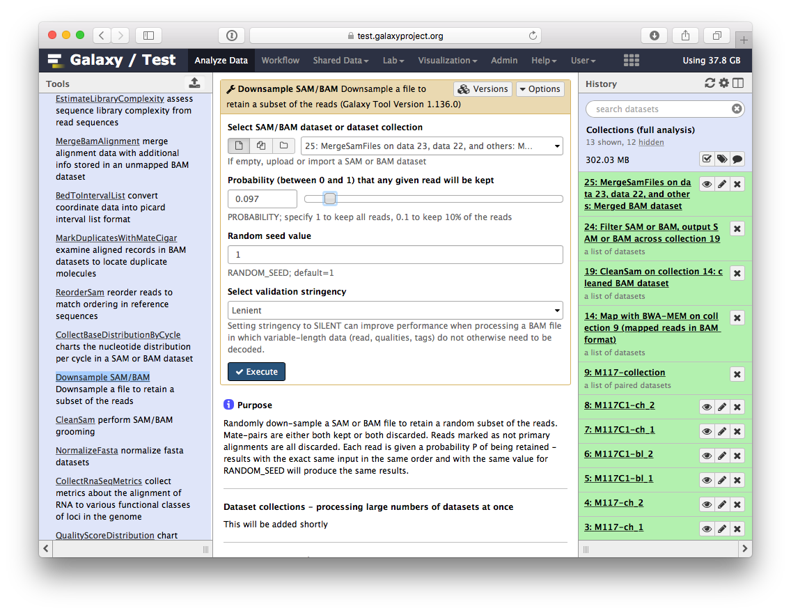
Set Probability (between 0 and 1) that any given read will be kept to roughly 5% (or 0.05) using the slider control:

This will generate another BAM dataset containing only 5% of the original reads and much smaller as a result. Click on this dataset and you will see links to various genome browsers:

Click the Human hg38 link in the display with IGV line as highlighted above (learn more about displaying Galaxy data in IGV with this movie). Below is an example generated with IGV on these data. In this screenshot, reads are colored by read group (four distinct colors). A yellow inset displays additional information about a single read. One can see that this read corresponds to read group M117-bl.
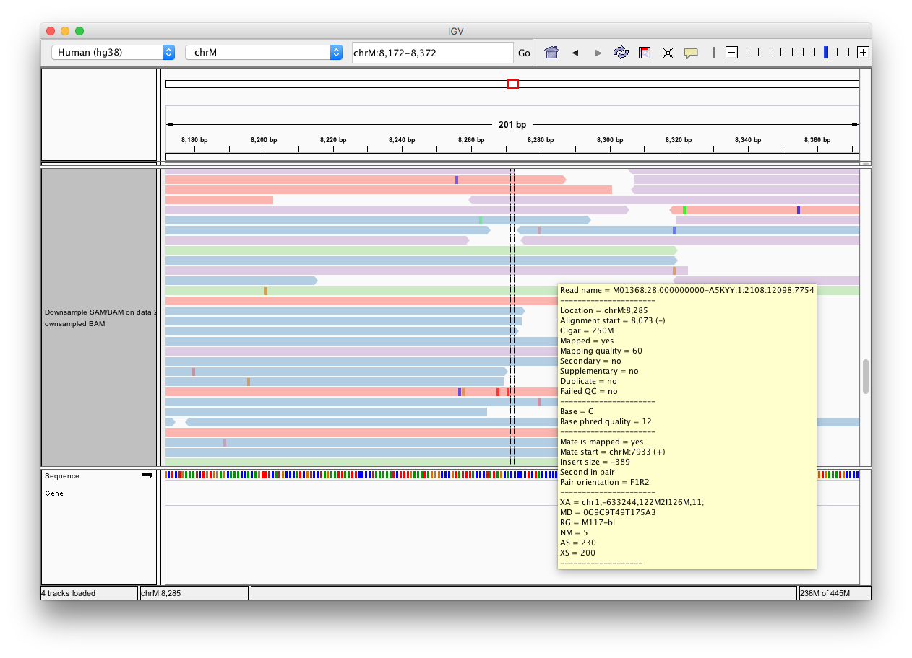
We did not fake this:
The history described in this page is accessible directly from here:
- History Collections (full analysis)
From there you can import histories to make them your own.
If things don’t work…
…you need to complain. Use Galaxy’s Help Channel to do this.
keypoints Key points
- Jobs running on data collections use the same settings for each dataset in the collection.
- For example, FASTQ files can be combined into lists of dataset pairs. Each pair is made up of the forward reads dataset and the reverse reads dataset.
- In this tutorial, several tools were run on the list of dataset pairs, such as `bwa-mem`, `cleanSam`, `Filter SAM or BAM`, etc.
- When using collections, you have to click on the `batch input mode` button, to select one of the collections available in the history. Otherwise, the collections are not available in the drop-down list.
congratulations Congratulations on successfully completing this tutorial!
feedback Give us even more feedback on this content!
To give us more detailed feedback about these materials, please take a moment to fill in the extended Feedback Form.